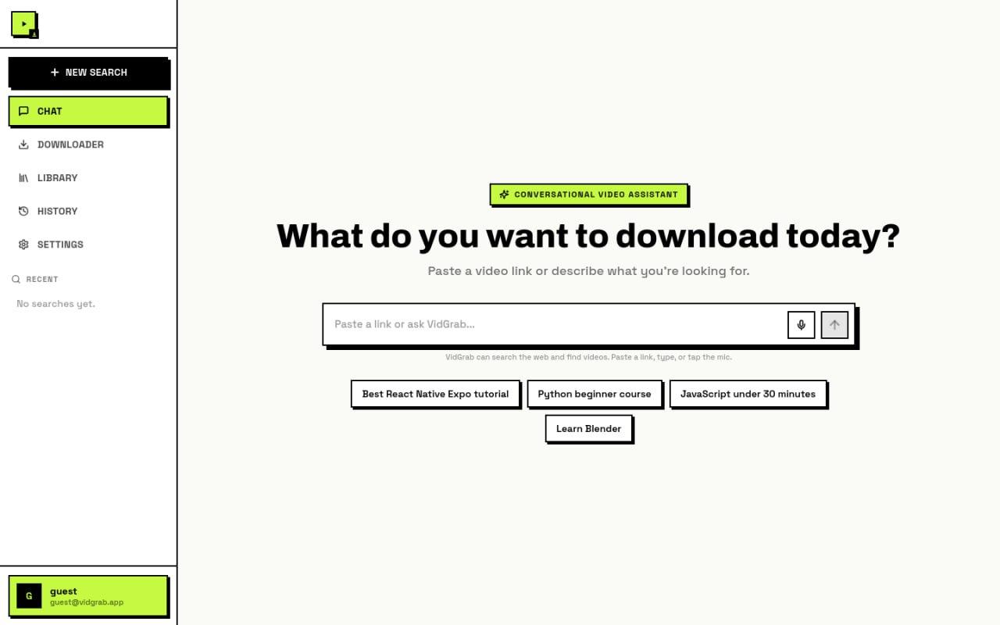

The problem
Saving a video from YouTube or Facebook usually means ad-covered download sites, unclear quality options, and no way to preview what you are actually about to grab.
What I built
Paste a link — or search YouTube with instant previews — then choose MP4 up to 1080p or MP3 audio. Extraction runs server-side, and the whole app is packaged to run anywhere.
How I built it
A React + Vite front end sits over a Node.js service. Extraction is handled by a MeTube-powered yt-dlp backend, and the whole app ships Docker-ready so it runs anywhere.
Key decisions
- Split the app into a light static front end and a separate extraction service, so the UI stays fast and the downloader can scale or run locally.
- Kept it account-free and limit-free by design — the value is speed, not another login to manage.
Result
A no-signup tool: paste a link, pick a format, download. Packaged to run anywhere, so anyone can self-host it in one command.
Video-Downloader was the project I invested most in during Replit's 10th birthday build day — $19.33 of agent time out of $27.22, in a session that ranked me in the top 8% of builders.